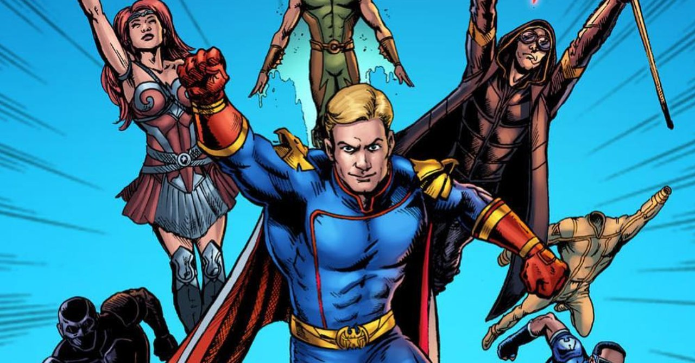

Quadrinhos

Novos super-heróis
Adaptações costumam trazer algumas novidades para surpreender os fãs que conhecem de cabo a rabo o material original. Ezequiel, Mesmer e Translúcido são personagens que não existem nas histórias em quadrinhos. Ezequiel é baseado em um pedófilo, enquanto Mesmer, interpretado por um adulto e engraçado Haley Joel Osment (o garotinho que via gente morta em Sexto Sentido), foi criado apenas para o show. Já Translúcido tem inspiração em no alienígena Jack de Júpiter, uma paródia ao Caçador de Marte e que podia ficar invisível nas revistas de The Boys.
O voo transoceânico 37
Depois de falhar miseravelmente no resgate do voo 37, Capitão Pátria usa esse episódio como uma justificativa para o governo dos Estados Unidos contratarem os heróis dos Sete para fins militares. Embora isso tenha sido antiético e desprezível, a trama original dos quadrinhos era bem pior. Originalmente, os Sete interceptaram um dos aviões que se dirigiam às Torres Gêmeas durante os ataques de 11 de setembro. Os heróis mataram os terroristas, mas a missão se torna um desastre e eles falham em impedir que um avião se choque na Ponte do Brooklyn. A Vought International consegue encobrir o caso.
Composto-V
Em The Boys, com exceção da Fêmea, nenhum dos integrantes possuem poderes. Eles são altamente treinados em armas e combate corpo-a-corpo. Para vencer os “supers”, os rapazes precisam usar o conhecimento e surpreender os adversários, já que um combate direto seria suicídio. Nos quadrinhos, o grupo todo usa o Composto-V, que também está na série e serve para turbinar os humanos, que, assim, ficam em pé de igualdade para enfrentar os super-heróis. Embora essa mudança possa deixar os personagens da TV mais palatáveis, isso remove a angústia que o grupo original sentia de usar a droga para perseguir os Sete.
Madelyn Stillwell
Nos quadrinhos, embora os Sete sejam os super-heróis mais poderosos do mundo, eles ainda precisam responder a um superior, que é James Stillwell, um executivo corporativo sem emoção e sociopata com nada além do bem-estar da Vought em sua mente. Para ter uma ideia, ele ordenou o massacre de um grupo análogo dos X-Men, pois achava que a equipe não podia ser controlada e por não haver “apelo comercial”. Nas telinhas, James por foi substituída por Madelyn Stillwell, que age como uma treinadora. Ao contrário de sua contraparte impressa, ela é mais humana e vulnerável.
Trem-Bala e Popclaw
Na TV, o que poderia ser visto como um contraste para Hughie e Luz-Estrela é a relação dos super-heróis Trem-Bala e Popclaw. O amor deles se transforma em tragédia quando Trem-Bala a mata para manter sua dependência do Composto-V oculta — e isso só piora as coisas. Essa relação nunca aconteceu nos quadrinhos porque os dois nunca compartilharam uma sequência juntos. Tudo sobre eles foi feito exclusivamente para a série, e os dois são consideravelmente mais simpáticos do que suas criaturas originais. No final dos quadrinhos, é Trem-Bala que morre, enquanto Popclaw (presumivelmente) ainda está viva.
O Profundo
No streaming, Luz-Estrela tem uma terrível decepção quando ela descobre que seu ídolo, o Profundo, não passa de uma pessoa ruim, que abusou sexualmente dela. Embora o assédio também tenha acontecido nos quadrinhos, no material original o culpado não é o análogo do Aquaman e o que ocorre é bem pior. Nas HQs, Luz-Estrela sofre pressão de Trem-Bala, Capitão Pátria e Black Noir para fazer sexo oral. O Profundo das revistas, na verdade, é mais maduro do que o da TV, enquanto Trem-Bala é que era mais arrogante e egocêntrico.
Capitão Pátria
A versão do Superman nos gibis é, basicamente, um pirralho mimado com os poderes de um deus e uma lista interminável de vícios. Tudo o que ele faz é motivado por seu desejo infantil de ser levado a sério, embora na metade das vezes ele aja impulsivamente. Na TV, ele é mais astuto e manipulador, embora mantenha o comportamento temperamental. Além disso, ele nutre uma bizarra relação de “mãe-amante” com Stillwell — algo que nunca aconteceria nos quadrinhos, já que ele desprezava o representante corporativo.
A origem da Fêmea
Nos quadrinhos, quando a personagem era bebê, ingeriu acidentalmente um pouco do Composto-V e se tornou perigosa. Exceto pelo francês, ninguém entende o que ela está pensando, mas ela sempre está por perto quando o The Boys precisa de uma mãozinha para rasgar alguém ao meio, serviço que ela também presta para a máfia. Enquanto isso, na TV ela tem uma história de fundo totalmente nova, como uma criança-soldado que recebeu o Composto V de seus compatriotas guerrilheiros. Inadvertidamente, ela foi um subproduto dos planos de Vought de criar supervilões, pois a empresa enviou o composto para terroristas para aumentar a demanda artificial por super-heróis que só eles podem satisfazer.
Luz-Estrela
Nos quadrinhos, a trama começa com os Sete dando as boas-vindas à novata Luz-Estrela. Embora ela seja ingênua no início, aos poucos se adapta e descobre como usar o ponto fraco do negócio de super-heróis. No streaming, por outro lado, a heroína é mais proativa. Mesmo pressionada pela Vought, Luz-Estrela não demora para amadurecer e se manter firme com seu idealismo. Assim como nas revistas, isso impressiona a Rainha Maeve.
Wee Hughie Campbell
O coração e a alma de The Boys é Hughie Campbell, tanto nos quadrinhos quanto na TV. Ele é bem-intencionado, mas originalmente covarde. Seu visual nas revistas é baseado no ator Simon Pegg, que na TV interpreta o pai de Hughie. Seu interesse por Luz-Estrela é mais intenso na TV, o que é bom, porque funciona como um alívio dramático em meio a tanta violência. E no streaming demora menos tempo até que Hughie finalmente confronte o controle de Billy Butcher.
Becca Butcher
A maior mudança em The Boys é o destino da esposa de Billy Butcher, Becca. Anteriormente, ela morria após dar à luz o bebê do Capitão Pátria. Seu estupro e morte nas mãos do líder dos Sete é a única coisa que mantinha Billy vivo. Surpreendentemente, na TV ela está viva. Aparentemente, a Vought escondeu sua sobrevivência e, mais importante, seu filho superpoderoso. Está implícito que os super-heróis não podem se reproduzir biologicamente, possivelmente fazendo do filho de Capitão Pátria o primeiro superser nascido fora de um laboratório. O fato de ela estar viva também derruba tudo em que Billy acreditava, tornando as coisas imprevisíveis para ele e até mesmo para os fãs mais dedicados dos quadrinhos.